一个课程设计。
实验背景
数字电路系统除包括组合逻辑电路外，还包括时序逻辑电路。所谓时序逻辑电 路，即电路任一时刻的输出不仅于该时刻的输入状态有关，而且还与电路原来所处的 状态有关。时序逻辑电路必须具备存储电路或反馈延时电路。
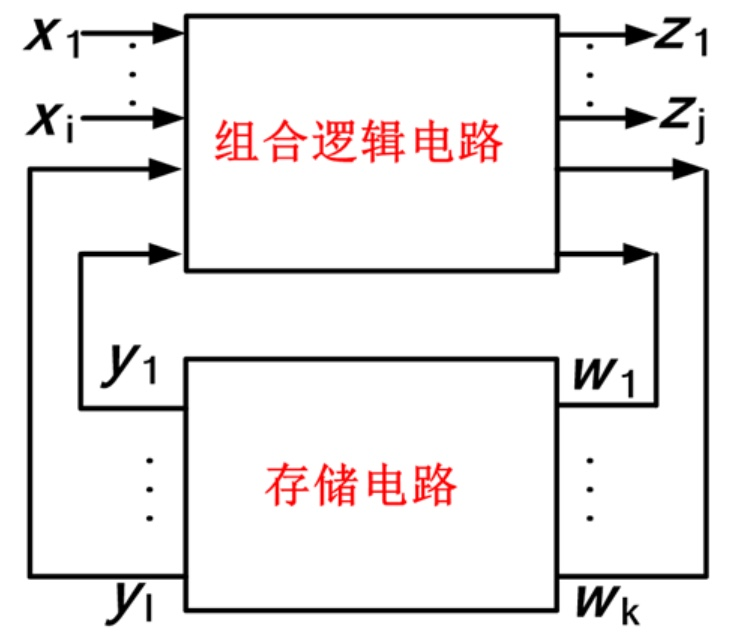
时序逻辑电路的机构框图
时序逻辑电路的结构框图如图 1 所示，它由组合逻辑电路和存储电路两部分组成。图中𝑋(𝑥1,𝑥2,…𝑥𝑖)代表整个时序电路的输入，𝑍(𝑧1,𝑧2,…𝑧𝑗)代表输出， 𝑊(𝑤1, 𝑤2, … , 𝑤𝑘)代表存储电路的驱动信号，𝑌(𝑦1, 𝑦2, … , 𝑦𝑙)代表存储电路的输出状 态。存储电路的输出反馈到输入端，与输入信号共同决定组合逻辑电路的输出。由组合逻辑电路可以写出两个方程:
输出方程 $$ 𝑍(𝑡𝑛) = 𝐹[𝑋(𝑡𝑛),𝑌(𝑡𝑛)] $$ 驱动方程 $$ 𝑊(𝑡𝑛) = 𝐻[𝑋(𝑡𝑛),𝑌(𝑡𝑛)] $$ 由存储电路可以写出一个方程:
状态方程
$$
𝑌(𝑡𝑛+1) = 𝐺[𝑊(𝑡𝑛),𝑌(𝑡𝑛)]
$$
式中，tn,tn+1 表示相邻的两个离散时间。
本实验设计的十进制计数器就是时序逻辑电路的一种。
任何一个数字系统几乎都包含计数器。计数器不仅可以用来计数，也可以用来 定时、分频和进行数字运算。所谓技术，就是计算输入脉冲的个数，而计数器就是实 现技术功能的时序逻辑器件。计数器种类很多，按照组成技术器各触发器的状态转换 所需 CP 是否来自统一的计数脉冲，可以分为同步计数器和异步计数器;按照计数数值的增减情况可以分为加法(递增)计数器，减法(递减)计数器和可逆计数器;按 照计数进位不同可分为二进制计数器，十进制计数器和可逆计数器。本实验我们先从 一个最基本的十进制计数器入手开始设计。
实验内容
实验 1.基于 JK 触发器的异步十进制加法计数器
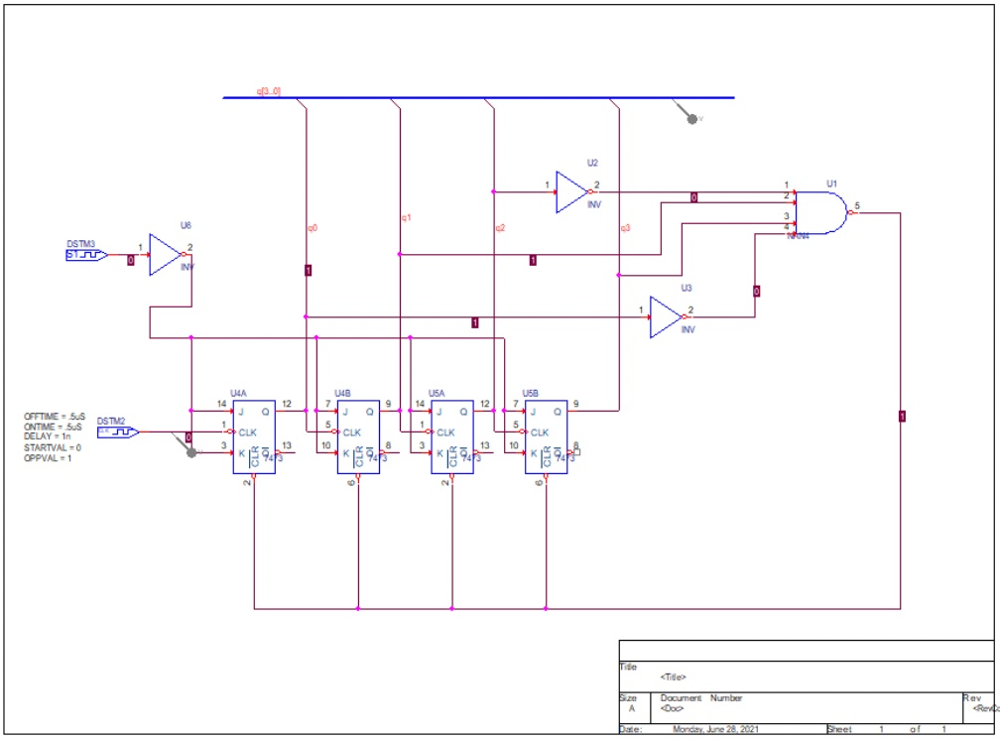
基于 JK 触发器的异步十进制加法计数器电路图
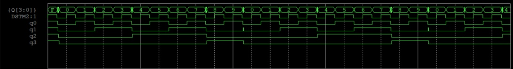
基于 JK 触发器的异步十进制加法计数器实验结果图
实验 2. 加入施密特触发器的异步十进制计数器
解决实验一中所出现的竞争冒险问题。
我们为将波形变得完美，加入施密特触发器实现输出波形的整形。
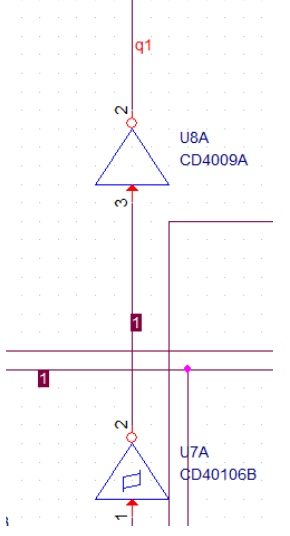
在输出 q1 之前连入的施密特触发器
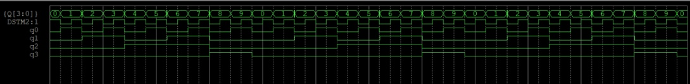
加入施密特触发器的异步十进制计数器实验输出波形
实验 3. 基于 D 触发器的异步十进制计数器
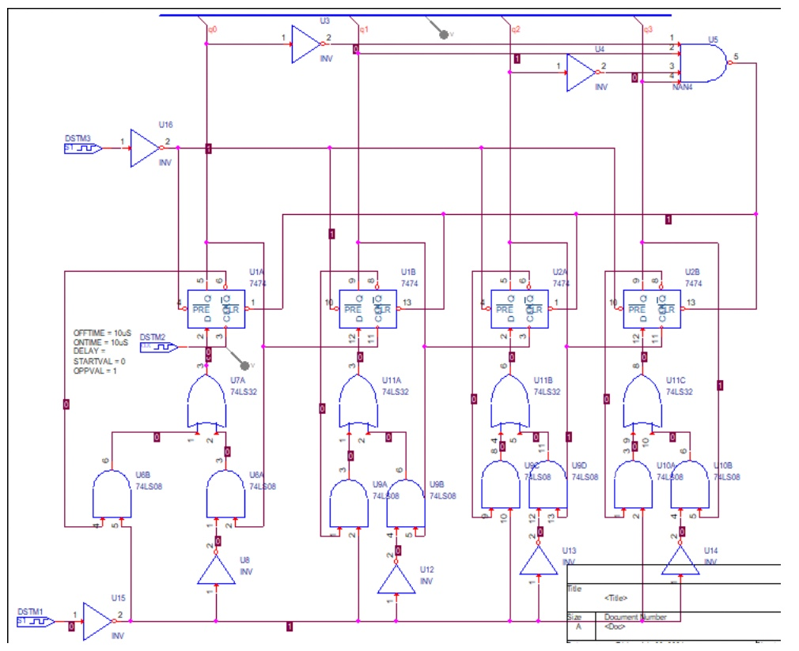
利用 D 触发器构成 JK 触发器的异步十进制计数器
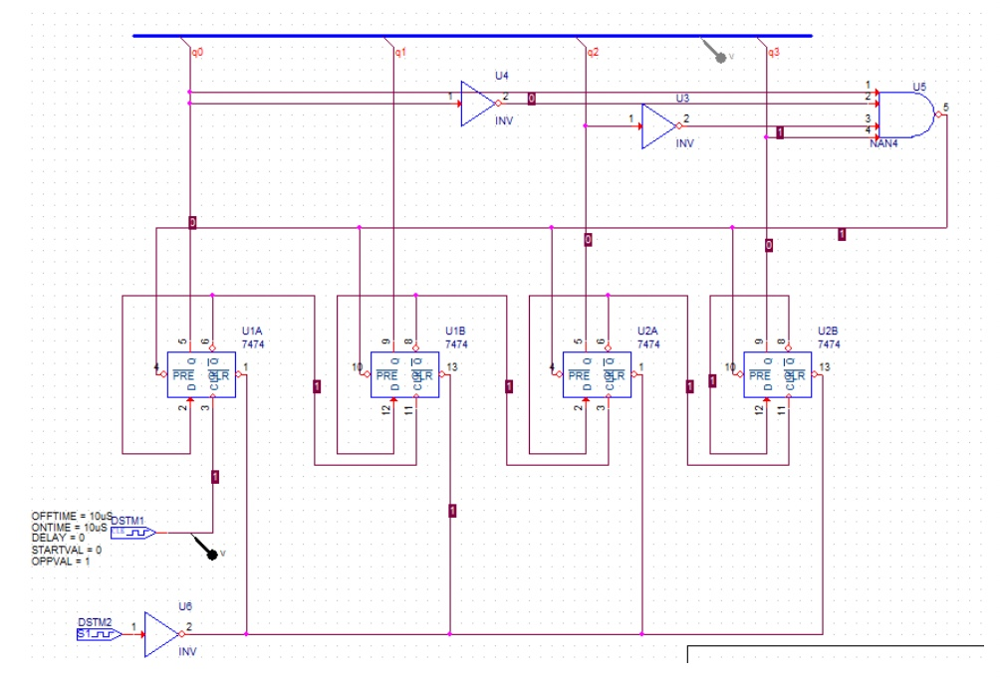
利用 D 触发器自身翻转特性构成的十进制计数器
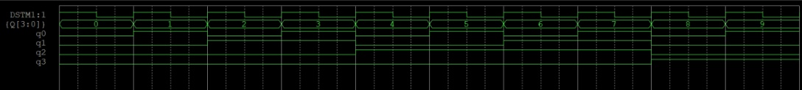
基于 D 触发器的十进制计数器输出波形
实验 4. 带有集成 555 计时器的异步十进制计数器
略
实验 5. 带有清零、扩展功能的异步十进制计数器
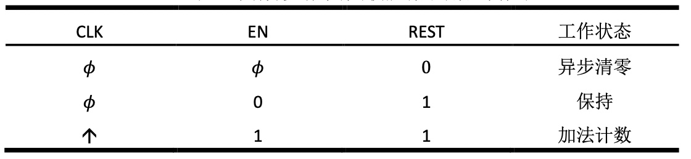
带有异步清零端与使能端的计数器真值表
实验 6. 环境温度对电路功耗的影响
利用“Simulation setting(仿真设计)”中“Analysis(分析)”中“Time Domain (Transient)(瞬态特性分析)”中的“Temperature(Sweep)(温度扫描)”进行对环境温度与电路功耗之间关系的探究。实验电路如下:
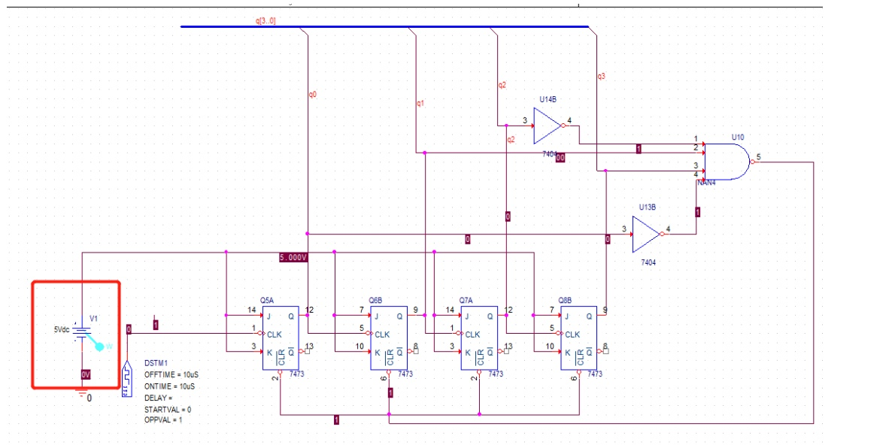
对电路进行温度扫描
1、使用直流电源 5V 为 JK 触发器提供高电平，由于电路的功率主要由直流电源提供，故将其功耗作为整个电路的功耗，在直流电源之上放置功率探头。
2、打开 Analysis 窗口，选择 Time Domain(Transient)，勾选其中 Option 的 Temperature(Sweep)。
3、在Temperature(Sweep)窗口设置多个温度值:: 0°C、5°C、10°C、15°C、20°C、25°C、30°C、35°C、40°C、45°C、50°C、55°C、60°C、65°C、70°C，相邻 温度之间用空格分隔。
4、运行仿真，得到结果。
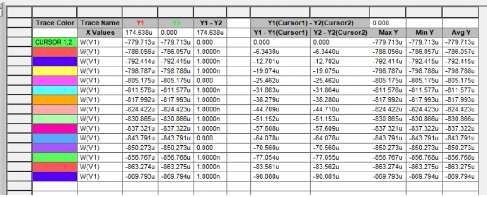
不同温度下的功耗数值
实验 7. 基于 JK 触发器的同步十进制加法计数器
略
实验出现问题及分析解决
在整个实验过程中，出现了一些问题，有关于软件使用的，有关于电路的设计的， 也有关于触发器初始状态以及总线的使用的，以上问题在经过组内成员深入讨论以 及查找资料后均已得到解决，下面简单介绍以上实验中所遇到的问题以及其解决方 案与心得体会。
- 在实验中，关于总线的使用有几点需要注意，首先是，要在Q3 → 𝑄0四条输出 端分别命名，注意低位与高位的顺序，其次除了四个输出端需要命名，BUS线 也要命名，其规则为:改为在前低位在后，角标用方括号框起来:Q[3. .0]。
- 在十进制时序电路的仿真过程中，一开始并未输出目标结果时序波形，所有 状态均为“X”,在CP信号作用下并未翻转，经检查，需设置FF触发器初始状态
补充
分工：
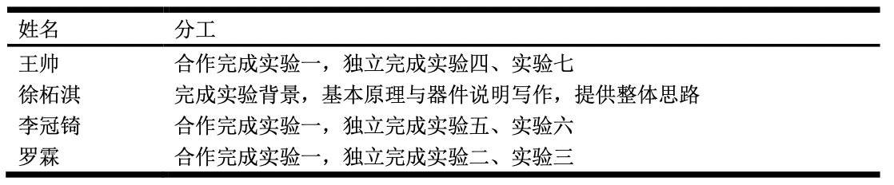
实验分工
总结
本课程所有仿真实验基于Capture CIS 模块，在独立仿真开始之前，课程首先系统学习了集成电路设计一些设计要求。而后又在上机课中学习了此模块的详细使用方法。主要有：（1）直流工作点分析（2）直流转移特性分析（3）传输函数计算（4）交流小信号分析（5）交流小信号噪音分析（6）瞬态分析（7）傅里叶分析（8）直流灵敏度分析